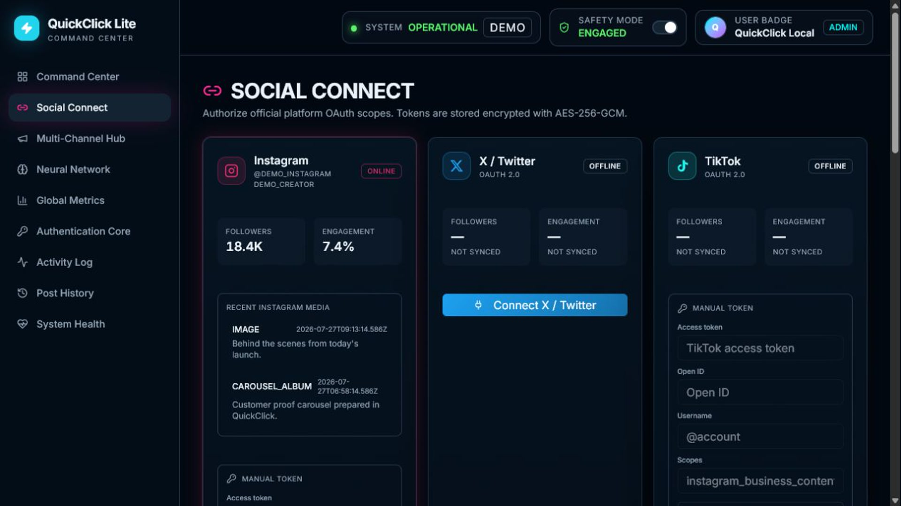
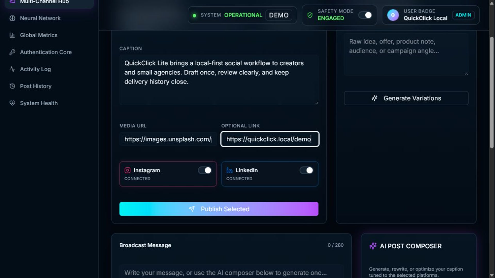
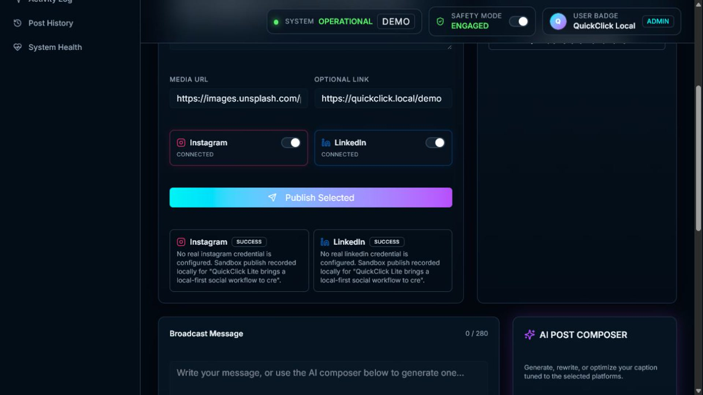
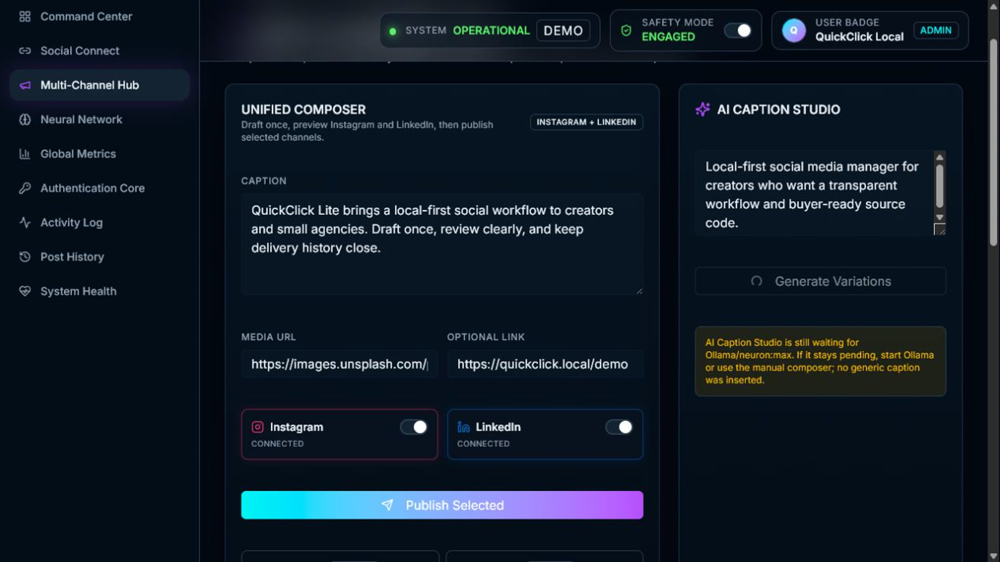
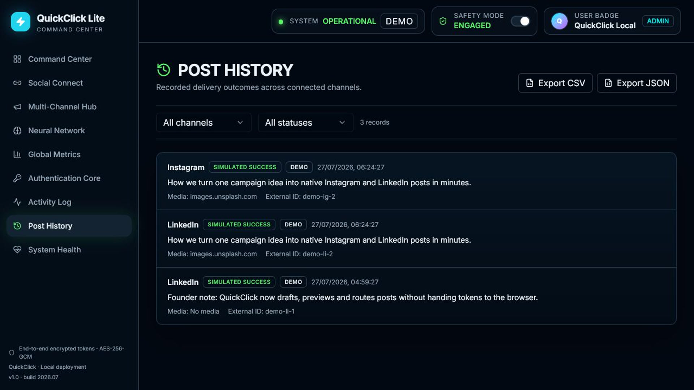
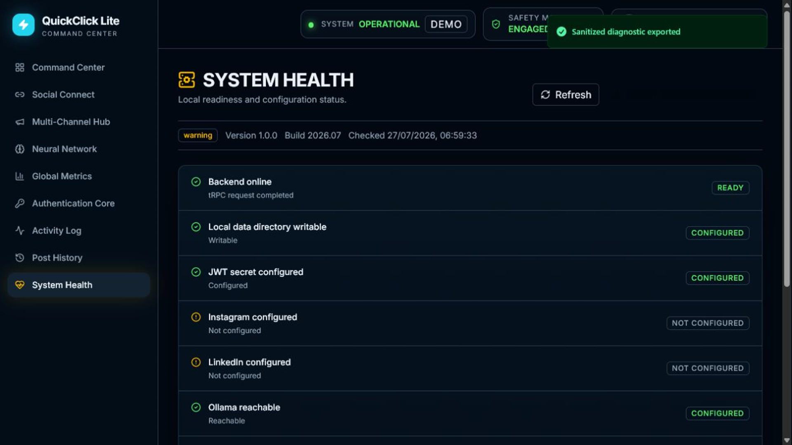

Unified Composer
Draft one caption, add a public media URL and link, preview the selected channels, then review a result per channel.
Source-code product · Local-first workflow
A local AI social media manager for buyers who want a clear, inspectable workflow before they decide how to host, extend, or white-label it.
QuickClick Lite is positioned honestly as a source-code product: a working local application, a sales-safe demo, and the practical materials needed for technical evaluation and buyer handoff.
Draft one caption, add a public media URL and link, preview the selected channels, then review a result per channel.
Show the workflow with fictional Instagram and LinkedIn profiles. Demo results are labeled simulated and never use a platform token.
Uses the existing local neural path for caption variations, hashtags, and calls to action; it reports a truthful fallback when unavailable.
Validated buyer configuration for the name, company, logo URL, website, footer, support address, and accent color.
Separate delivery-facing history with sanitized CSV/JSON export and review-first retry drafts rather than silent reposting.
Local readiness checks and a sanitized diagnostic export that reports states without exposing tokens, headers, account data, or environment values.
This recorded walk-through is built from the actual Buyer Demo Mode. Any publish success shown is explicitly a local sandbox record; it is not a real social post.
Real local captures from the sanitized demonstration environment, covering the workflow a buyer can inspect before discussing a handoff.






Scope
Roadmap, not a claim
This is not a revenue-generating SaaS listing. It is a local source-code product with a clear extension roadmap.
The release includes buyer-facing documentation, a package manifest, checksums, a security cleanup checklist, known limitations, and a practical handoff plan.
Clean source, lockfile, setup files, launchers, and Buyer Demo Mode.
Type check, test suite, build evidence, and local route verification.
Sanitized diagnostics, scan summary, package audit, and no seller credentials.
Scope, known limitations, FAQs, response templates, and post-sale support boundaries.
Clear answers make technical evaluation faster and prevent misplaced expectations.
No. The buyer supplies their own official platform setup, tokens, account identifiers, scopes, and public HTTPS media. Seller accounts and credentials are excluded.
No. Buyer Demo Mode records an explicitly labeled local sandbox result. It is designed for safe sales demonstrations without a real provider call.
Yes. The included configuration validates buyer-controlled name, company, logo URL, website URL, support email, footer text, and accent color without allowing arbitrary HTML or script injection.
No. TikTok real publishing is a roadmap item and must not be presented as a working Lite feature.
The commercial license delivers the identified ZIP after confirmed checkout payment. A broader project-asset acquisition uses the video, screenshots, documentation, package manifest, test results, hashes, and a demo call before the parties agree on scope and payment or escrow.
Buy the perpetual non-exclusive commercial source license now, or contact the seller to discuss a broader project-asset transfer and technical handoff.